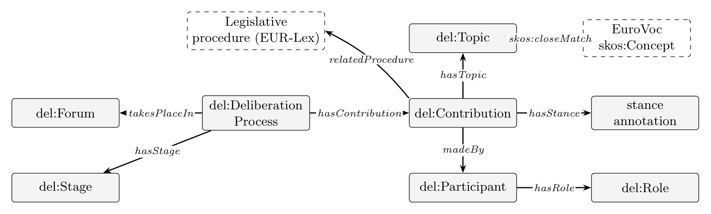

Deliberation Ontology
Release: 2025-03-03
- Modified on: 2026-07-23
- Revision:
- 1.1.0
- Authors:
- Simone Vagnoni
- Download serialization:


- License:

- Cite as:
- Simone Vagnoni. Deliberation Ontology. Revision: 1.1.0.
Deliberation Ontology: Overview back to ToC
This ontology has the following classes and properties.Classes
- Argument
- Argument Structure
- Artificial Agent
- Conclusion
- Consensus
- Contribution
- Cross Platform Identifier
- Deliberation Process
- Evidence
- Facilitator
- Fallacy Type
- Forum
- Information Resource
- Legal Source
- Organization
- Participant
- Position
- Premise
- Reaction
- Role
- Stage
- Topic
Object Properties
- attacks
- author
- contains fallacy
- has argument
- has conclusion
- has contribution
- has evidence
- has participant
- has premise
- has role
- has stage
- has topic
- is affiliated with
- is part of
- made by
- references
- response to
- supports
- takes place in
Data Properties
Deliberation Ontology: Description back to ToC
Core schema. The diagram below shows the core classes and properties; dashed boxes are external resources (EuroVoc concepts, EUR-Lex/OEIL legislative procedures). Alignments to SIOC, SIOC-Argumentation, AIF, FOAF, and LKIF are published in the mappings module.

A comprehensive model for representing deliberative processes across different platforms and contexts.Cross-reference for Deliberation Ontology classes, object properties and data properties back to ToC
This section provides details for each class and property defined by Deliberation Ontology.Classes
- Argument
- Argument Structure
- Artificial Agent
- Conclusion
- Consensus
- Contribution
- Cross Platform Identifier
- Deliberation Process
- Evidence
- Facilitator
- Fallacy Type
- Forum
- Information Resource
- Legal Source
- Organization
- Participant
- Position
- Premise
- Reaction
- Role
- Stage
- Topic
Argumentc back to ToC or Class ToC
IRI: https://w3id.org/deliberation/ontology#Argument
- has super-classes
- Contribution c
- is in domain of
- attacks op, contains fallacy op, has conclusion op, has evidence op, has premise op, references op, supports op, text dp
- is in range of
- attacks op, has argument op, supports op
Argument Structurec back to ToC or Class ToC
IRI: https://w3id.org/deliberation/ontology#ArgumentStructure
- has sub-classes
- Conclusion c, Premise c
Artificial Agentc back to ToC or Class ToC
IRI: https://w3id.org/deliberation/ontology#ArtificialAgent
- has super-classes
- Participant c
Conclusionc back to ToC or Class ToC
IRI: https://w3id.org/deliberation/ontology#Conclusion
- has super-classes
- Argument Structure c
- is in domain of
- text dp
- is in range of
- has conclusion op
Consensusc back to ToC or Class ToC
IRI: https://w3id.org/deliberation/ontology#Consensus
Contributionc back to ToC or Class ToC
IRI: https://w3id.org/deliberation/ontology#Contribution
- has sub-classes
- Argument c, Reaction c
- is in domain of
- agree count dp, author op, disagree count dp, is part of op, made by op, references op, response to op, text dp, timestamp dp
- is in range of
- has contribution op, response to op
Cross Platform Identifierc back to ToC or Class ToC
IRI: https://w3id.org/deliberation/ontology#CrossPlatformIdentifier
- is in domain of
- platform identifier dp
Deliberation Processc back to ToC or Class ToC
IRI: https://w3id.org/deliberation/ontology#DeliberationProcess
- is in domain of
- end date dp, has argument op, has contribution op, has participant op, has stage op, has topic op, start date dp, takes place in op
- is in range of
- is part of op
Evidencec back to ToC or Class ToC
IRI: https://w3id.org/deliberation/ontology#Evidence
- is in range of
- has evidence op
Facilitatorc back to ToC or Class ToC
IRI: https://w3id.org/deliberation/ontology#Facilitator
- has super-classes
- Role c
Fallacy Typec back to ToC or Class ToC
IRI: https://w3id.org/deliberation/ontology#FallacyType
- is in range of
- contains fallacy op
Forumc back to ToC or Class ToC
IRI: https://w3id.org/deliberation/ontology#Forum
- is in range of
- takes place in op
Information Resourcec back to ToC or Class ToC
IRI: https://w3id.org/deliberation/ontology#InformationResource
- has sub-classes
- Legal Source c
- is in domain of
- url dp
- is in range of
- references op
Legal Sourcec back to ToC or Class ToC
IRI: https://w3id.org/deliberation/ontology#LegalSource
- has super-classes
- Information Resource c
Organizationc back to ToC or Class ToC
IRI: https://w3id.org/deliberation/ontology#Organization
- is in range of
- is affiliated with op
Participantc back to ToC or Class ToC
IRI: https://w3id.org/deliberation/ontology#Participant
- has sub-classes
- Artificial Agent c
- is in domain of
- country dp, has role op, is affiliated with op, participant type dp
- is in range of
- author op, has participant op, made by op
Positionc back to ToC or Class ToC
IRI: https://w3id.org/deliberation/ontology#Position
Premisec back to ToC or Class ToC
IRI: https://w3id.org/deliberation/ontology#Premise
- has super-classes
- Argument Structure c
- is in domain of
- has evidence op, text dp
- is in range of
- has premise op
Reactionc back to ToC or Class ToC
IRI: https://w3id.org/deliberation/ontology#Reaction
- has super-classes
- Contribution c
- is in domain of
- reaction type dp, reaction value dp
Rolec back to ToC or Class ToC
IRI: https://w3id.org/deliberation/ontology#Role
- has sub-classes
- Facilitator c
- is in range of
- has role op
Stagec back to ToC or Class ToC
IRI: https://w3id.org/deliberation/ontology#Stage
- is in domain of
- end date dp, start date dp
- is in range of
- has stage op
Object Properties
- attacks
- author
- contains fallacy
- has argument
- has conclusion
- has contribution
- has evidence
- has participant
- has premise
- has role
- has stage
- has topic
- is affiliated with
- is part of
- made by
- references
- response to
- supports
- takes place in
attacksop back to ToC or Object Property ToC
IRI: https://w3id.org/deliberation/ontology#attacks
authorop back to ToC or Object Property ToC
IRI: https://w3id.org/deliberation/ontology#author
- has equivalent properties
- made by op
- has domain
- Contribution c
- has range
- Participant c
contains fallacyop back to ToC or Object Property ToC
IRI: https://w3id.org/deliberation/ontology#containsFallacy
- has domain
- Argument c
- has range
- Fallacy Type c
has argumentop back to ToC or Object Property ToC
IRI: https://w3id.org/deliberation/ontology#hasArgument
- has domain
- Deliberation Process c
- has range
- Argument c
has conclusionop back to ToC or Object Property ToC
IRI: https://w3id.org/deliberation/ontology#hasConclusion
- has domain
- Argument c
- has range
- Conclusion c
has contributionop back to ToC or Object Property ToC
IRI: https://w3id.org/deliberation/ontology#hasContribution
- has domain
- Deliberation Process c
- has range
- Contribution c
- is inverse of
- is part of op
has evidenceop back to ToC or Object Property ToC
IRI: https://w3id.org/deliberation/ontology#hasEvidence
has participantop back to ToC or Object Property ToC
IRI: https://w3id.org/deliberation/ontology#hasParticipant
- has domain
- Deliberation Process c
- has range
- Participant c
has premiseop back to ToC or Object Property ToC
IRI: https://w3id.org/deliberation/ontology#hasPremise
has roleop back to ToC or Object Property ToC
IRI: https://w3id.org/deliberation/ontology#hasRole
- has domain
- Participant c
- has range
- Role c
has stageop back to ToC or Object Property ToC
IRI: https://w3id.org/deliberation/ontology#hasStage
- has domain
- Deliberation Process c
- has range
- Stage c
has topicop back to ToC or Object Property ToC
IRI: https://w3id.org/deliberation/ontology#hasTopic
- has domain
- Deliberation Process c
- has range
- Topic c
is affiliated withop back to ToC or Object Property ToC
IRI: https://w3id.org/deliberation/ontology#isAffiliatedWith
- has domain
- Participant c
- has range
- Organization c
is part ofop back to ToC or Object Property ToC
IRI: https://w3id.org/deliberation/ontology#isPartOf
- has domain
- Contribution c
- has range
- Deliberation Process c
- is inverse of
- has contribution op
made byop back to ToC or Object Property ToC
IRI: https://w3id.org/deliberation/ontology#madeBy
- has equivalent properties
- author op
- has domain
- Contribution c
- has range
- Participant c
referencesop back to ToC or Object Property ToC
IRI: https://w3id.org/deliberation/ontology#references
- has domain
- Argument c or Contribution c
- has range
- Information Resource c
response toop back to ToC or Object Property ToC
IRI: https://w3id.org/deliberation/ontology#responseTo
- has domain
- Contribution c
- has range
- Contribution c
supportsop back to ToC or Object Property ToC
IRI: https://w3id.org/deliberation/ontology#supports
takes place inop back to ToC or Object Property ToC
IRI: https://w3id.org/deliberation/ontology#takesPlaceIn
- has domain
- Deliberation Process c
- has range
- Forum c
Data Properties
- agree count
- country
- disagree count
- end date
- identifier
- name
- participant type
- platform identifier
- reaction type
- reaction value
- start date
- text
- timestamp
- url
agree countdp back to ToC or Data Property ToC
IRI: https://w3id.org/deliberation/ontology#agreeCount
- has domain
- Contribution c
- has range
- integer
countrydp back to ToC or Data Property ToC
IRI: https://w3id.org/deliberation/ontology#country
- has domain
- Participant c
- has range
- string
disagree countdp back to ToC or Data Property ToC
IRI: https://w3id.org/deliberation/ontology#disagreeCount
- has domain
- Contribution c
- has range
- integer
end datedp back to ToC or Data Property ToC
IRI: https://w3id.org/deliberation/ontology#endDate
- has domain
- Deliberation Process c or Stage c
- has range
- date Time
identifierdp back to ToC or Data Property ToC
IRI: https://w3id.org/deliberation/ontology#identifier
- has sub-properties
- platform identifier dp
- has range
- string
namedp back to ToC or Data Property ToC
IRI: https://w3id.org/deliberation/ontology#name
- has range
- string
participant typedp back to ToC or Data Property ToC
IRI: https://w3id.org/deliberation/ontology#participantType
- has domain
- Participant c
- has range
- string
platform identifierdp back to ToC or Data Property ToC
IRI: https://w3id.org/deliberation/ontology#platformIdentifier
- has super-properties
- identifier dp
- has domain
- Cross Platform Identifier c
- has range
- string
reaction typedp back to ToC or Data Property ToC
IRI: https://w3id.org/deliberation/ontology#reactionType
reaction valuedp back to ToC or Data Property ToC
IRI: https://w3id.org/deliberation/ontology#reactionValue
start datedp back to ToC or Data Property ToC
IRI: https://w3id.org/deliberation/ontology#startDate
- has domain
- Deliberation Process c or Stage c
- has range
- date Time
textdp back to ToC or Data Property ToC
IRI: https://w3id.org/deliberation/ontology#text
- has domain
- Argument c or Conclusion c or Contribution c or Position c or Premise c
- has range
- string
timestampdp back to ToC or Data Property ToC
IRI: https://w3id.org/deliberation/ontology#timestamp
- has domain
- Contribution c
- has range
- date Time
urldp back to ToC or Data Property ToC
IRI: https://w3id.org/deliberation/ontology#url
- has domain
- Information Resource c
- has range
- any U R I
Legend back to ToC
op: Object Properties
dp: Data Properties
Acknowledgments back to ToC
The authors would like to thank Silvio Peroni for developing LODE, a Live OWL Documentation Environment, which is used for representing the Cross Referencing Section of this document and Daniel Garijo for developing Widoco, the program used to create the template used in this documentation.